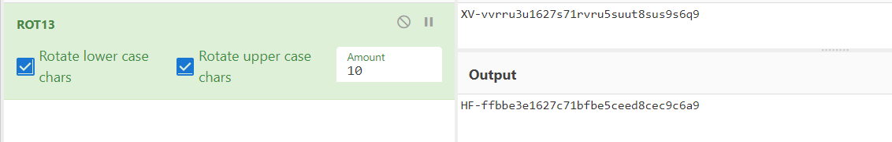
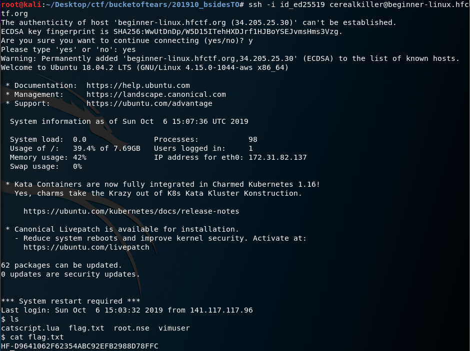
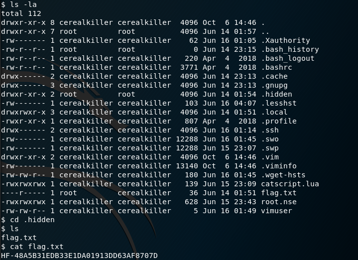
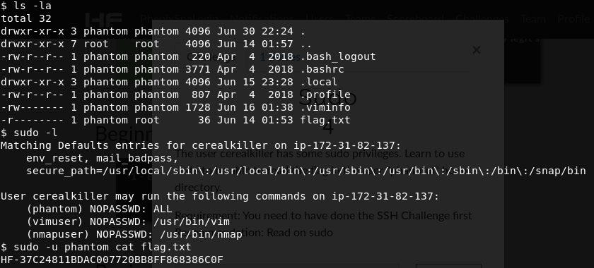
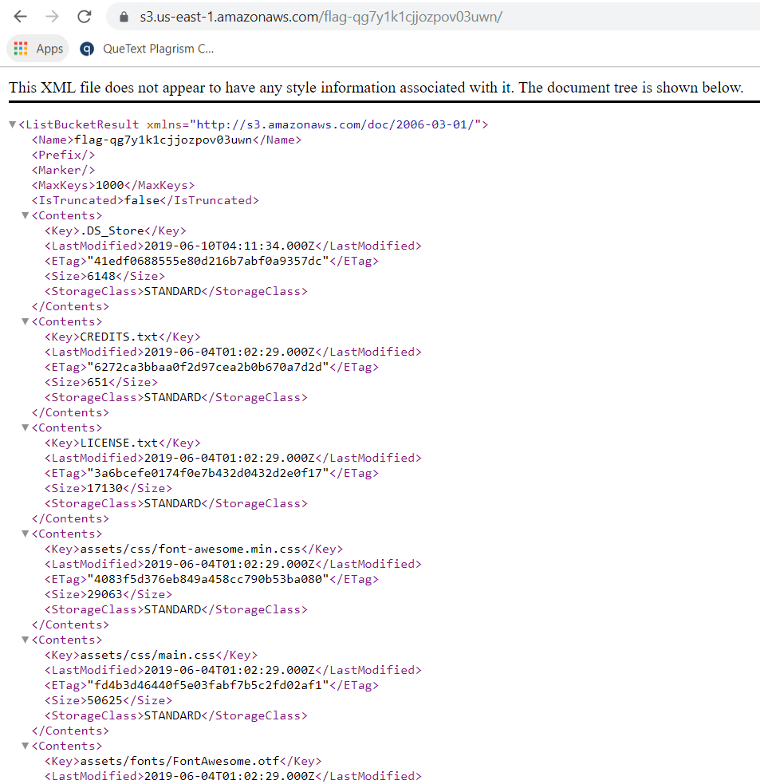

on
Bsides Toronto 2019
Another day, another security event. Unlike Day of Shecurity (DOS) – whose CTF were mainly catered for begineers – Bsides Toronto’s CTF was very much harder.
Coincidently, I banged into folks I’ve met while in DOS at this event and was lucky enough to team with Brandon from ThreatGRID Cisco where I learned tons from picking his brains for ideas and solutions!
Bsides Toronto 2019 CTF
Event name: Bsides Toronto 2019
Location: Ryerson University
Date: 06/10/2019
Team: BoT

[Web] Encrypted
This simple file contains 3 flags. Can you dig deep enough?
01100001 01010110 01100101 01110010 01111001 01010011 01110100 01110010 01101111 01101110 01100111 01010000 01100001 01110011 01110011 01110000 01101000 01110010 01100001 01110011 01100101
After decoding binary to ASCII via base64 --decode, we obtained aVeryStrongPassphrase. Using file FILE.zip.gpg, we obtain FILE.zip.gpg: GPG symmetrically encrypted data (AES cipher).
Entering the passphrase when prompted by gpg FILE.zip.gpg would produce flag.txt and flag.jpg for this challenge and the next challenge respectively.
Flag: ykhti36b2thircqwr31sm17x7wpxsj4b
[Web] Crawler
What page does a crawler check to see where he can and cannot go? Use the server beginner-web.hfctf.org. The answer is a full flag not just the file name.
We are greeted with a default apache page here. Given the challenge name, accessing beginner-web.hfctf.org/robots.txt provides us with our flag!
Flag: HF-DA371569A494D6953447F68C2F6316B2
[Web] Port Scan
By default, nmap will only scan the top 1000 ports. Can you learn how to fix this? If you find a weird port, you can poke it with nc (netcat).
Address: beginner-web.hfctf.org
Recommended Tools: nmap, nc (netcat)
From the manual, we know that to scan all ports, -p- flag is needed.
nmap -sC -sV -p- -oA hackfest beginner-web.hfctf.org
# Nmap 7.70 scan initiated Sun Oct 6 10:08:55 2019 as: nmap -sC -sV -p- -oA hackfest beginner-web.hfctf.org
Nmap scan report for beginner-web.hfctf.org (3.92.223.240)
Host is up (0.00052s latency).
rDNS record for 3.92.223.240: ec2-3-92-223-240.compute-1.amazonaws.com
Not shown: 65531 filtered ports
PORT STATE SERVICE VERSION
22/tcp open tcpwrapped
| ssh-hostkey:
| 2048 8c:86:62:de:2d:34:11:8c:39:86:c4:a8:03:10:3d:fd (RSA)
| 256 e4:7b:74:cb:34:f3:ab:b8:5f:60:d4:0a:de:d0:13:c7 (ECDSA)
|_ 256 70:2d:af:8a:68:e1:f5:94:a7:97:a0:54:f8:b5:85:02 (ED25519)
53/tcp open tcpwrapped
80/tcp open tcpwrapped
|_http-server-header: Apache/2.4.29 (Ubuntu)
|_http-title: Apache2 Ubuntu Default Page: It works
13337/tcp open tcpwrapped
We see here that port 13337 opened. Probing it with nc begineer-web.hfctf.org 13337 will return us with the flag!
Flag: HF-6DA40A2D1CBA006ABAC5663543B69994
[Cipher] Base64
If you see a string that seems encoded, contains only numbers, letters, / and = and might finish with either one or two = (but not all the time) you should try this decoding method. It is also used by pentesters to transfer files over the network and to make sure we are not missing any parts.
Here is the string : SEYtNmQzZTdmMTlhNjhlM2FjOWY4ZGM2ODNhYTJlNjFlZDY=
We can decode base64 with echo "SEYtNmQzZTdmMTlhNjhlM2FjOWY4ZGM2ODNhYTJlNjFlZDY=" | base64 --decode to return us the flag!
Flag: HF-6d3e7f19a68e3ac9f8dc683aa2e61ed6
[Cipher] Julius
One of the first used cipher in history.
XV-vvrru3u1627s71rvru5suut8sus9s6q9
Caesar cipher is named after Julius Caesar and is one of the earliest known and simplest cipher. Essentially a ROT13 cipher, key 10 would give us our flag!

Flag: HF-ffbbe3e1627c71bfbe5ceed8cec9c6a9
[Linux] SSH Key
You are given an SSH key to the kingdom, do you know how to use it?
If you do, use it at beginner-linux.hfctf.org with the user
cerealkiller.
chmod 600 id_ed25519
ssh -i id_ed25519 cerealkiller@beginner-linux.hfctf.org

Checking the directory, we see a flag.txt file! cat-ing the contents would provide us with our flag!
Flag: HF-D9641062F62354ABC92EFB2988D78FFC
[Linux] Hidden File
Get a shell as the user
cerealkillerwith the previous SSH key and look for a hidden file.Requirement: You need to have done the SSH Challenge first

Examining the directory carefully, we see a hidden folder named .hidden. Accessing it, we see another flag.txt file. The contents reveals our flag!
Flag: HF-48A5B31EDB33E1DA01913DD63AF8707D
[Linux] Sudo
The user
cerealkillerhas somesudoprivileges. Learn to usesudoto be able to read the flag in the user “phantom” home directory
With sudo -l, we can check what kind of sudo privileges cerealkiller has:
Matching Defaults entries for cerealkiller on ip-172-31-82-137:
env_reset, mail_badpass,
secure_path=/usr/local/sbin\:/usr/local/bin\:/usr/sbin\:/usr/bin\:/sbin\:/bin\:/snap/bin
User cerealkiller may run the following commands on ip-172-31-82-137:
(phantom) NOPASSWD: ALL
(vimuser) NOPASSWD: /usr/bin/vim
(nmapuser) NOPASSWD: /usr/bin/nmap
From here, we know that cerealkiller can access all of phantom’s file. That means cat home/phantom/flag.txt would work right? Nope! We got a permission denied error message. Whyyyy?
This is because EXPLAINATION HERE. To get our flag, we should assume phantom’s’ identity to read the file via sudo -u phantom cat flag.txt.

Flag: HF-37C24811BDAC007720BB8FF868386C0F
[Linux] Vim
Vim is a popular text editor for Linux, but there are a lot more that you can do with it rather than just editing text. Can you find out what?
I learnt lots of stuff today and this was one that blew my mind away.
Just like before, we start by assuming the identity of vimuser to create a vim file through sudo -u vimuser vim switch.txt.
Now that we are in a new vim file, we can spawn a new bash terminal with !/bin/sh through vim’s terminal! With whoami command, we can confirm that we are currently logged in as vimuser.
Accessing the contents of /home/vimuser/flag.txt would give us our flag!
Flag: HF-0224B9BFA1235B2D5CE597E73B089C3C
[Crypto] Hash you said Hash?
I’ve found a hash and I’m sure it’s my password for my file ;( how can I know what it is?
Can you help me!
Hash: 7740b5345bc0f61056c125db6fae5bfc
Using an online tool, we can easily crack the hash 7740b5345bc0f61056c125db6fae5bfc to 1INFRASTRUCTURES
[Privacy] LazyTiger
It’s incredible all we can see on this picture! A Lazy Tiger surely! but…..
Running exiftool shows us a bunch of interesting details on where the photograph was taken.
ExifTool Version Number : 11.16
File Name : LazyTiger.jpg
Directory : .
File Size : 382 kB
File Modification Date/Time : 2019:10:06 12:48:08-04:00
File Access Date/Time : 2019:10:06 12:48:22-04:00
File Inode Change Date/Time : 2019:10:06 12:48:10-04:00
File Permissions : rw-r--r--
File Type : JPEG
File Type Extension : jpg
MIME Type : image/jpeg
JFIF Version : 1.01
X Resolution : 96
Y Resolution : 96
Exif Byte Order : Big-endian (Motorola, MM)
Make : TigerBrand
Camera Model Name : SuperPro
Resolution Unit : None
Y Cb Cr Positioning : Centered
Exif Version : 0230
Components Configuration : Y, Cb, Cr, -
Flashpix Version : 0100
Lens Make : ATM
Lens Model : CTF
Lens Serial Number : 666C61677B6173747574655F74696765727D
GPS Latitude Ref : North
GPS Longitude Ref : East
Padding : (Binary data 2060 bytes, use -b option to extract)
IPTC Digest : d41d8cd98f00b204e9800998ecf8427e
Warning : [minor] Fixed incorrect URI for xmlns:MicrosoftPhoto
About : uuid:faf5bdd5-ba3d-11da-ad31-d33d75182f1b
Camera Serial Number : 666C61677B6173747574655F74696765727D
Image Width : 1200
Image Height : 900
Encoding Process : Baseline DCT, Huffman coding
Bits Per Sample : 8
Color Components : 3
Y Cb Cr Sub Sampling : YCbCr4:2:0 (2 2)
GPS Latitude : 53 deg 33' 53.95" N
GPS Longitude : 106 deg 17' 42.92" E
GPS Position : 53 deg 33' 53.95" N, 106 deg 17' 42.92" E
Image Size : 1200x900
Megapixels : 1.1
With the challenge description being privacy, I thought that the GPS position would be important. Converting 53 deg 33' 53.95" N, 106 deg 17' 42.92" E to decimals: 53.5649861,106.29525555555556 revealed that the picture was taken at Kachugsky District, Irkutsk Oblast, Russia.
After discussing this challenge with Brandon, he noticed that the serial number could actually be decoded to hex.
python -c "print('666C61677B6173747574655F74696765727D'.decode('hex'))"
flag{astute_tiger}
Flag: flag{astute_tiger}
[SDR] Look around…
Head to https://sdr.hfctf.org/
Look around this webpage. Can-you find anything revolving around the “CDN” it uses?
Flag is case-sensitive
Poking around the site for any CDN related words, a network request caught my eye!

Accessing https://sdr-cdn.hfctf.org/images/pic02.jpg redirected me to https://s3.us-east-1.amazonaws.com/flag-qg7y1k1cjjozpov03uwn/images/pic02.jpg
We found our flag!
Flag: flag-qg7y1k1cjjozpov03uwn
[SDR] Look into the clouds
Head to https://sdr.hfctf.org/
Look around this webpage. Can-you do some kind of modern-day directory-listing?
Continuing from the previous challenge, we obtain the link of https://s3.us-east-1.amazonaws.com/flag-qg7y1k1cjjozpov03uwn/images/pic02.jpg, what happens when we traverse back the directory.

Oooh, an XML file. Beautiful. At the very bottom, we see something suspicious!
<Contents>
<Key>you_should_not_see_this_file.txt</Key>
<LastModified>2019-06-04T03:54:13.000Z</LastModified>
<ETag>"07f0425001b94325d04e542fb8ef23bd"</ETag>
<Size>26</Size>
<StorageClass>STANDARD</StorageClass>
</Contents>
Accessing https://s3.us-east-1.amazonaws.com/flag-qg7y1k1cjjozpov03uwn/you_should_not_see_this_file.txt gives us our flag!
Flag: FLAG-bKrdxHOcXwDkOnWb6i4p